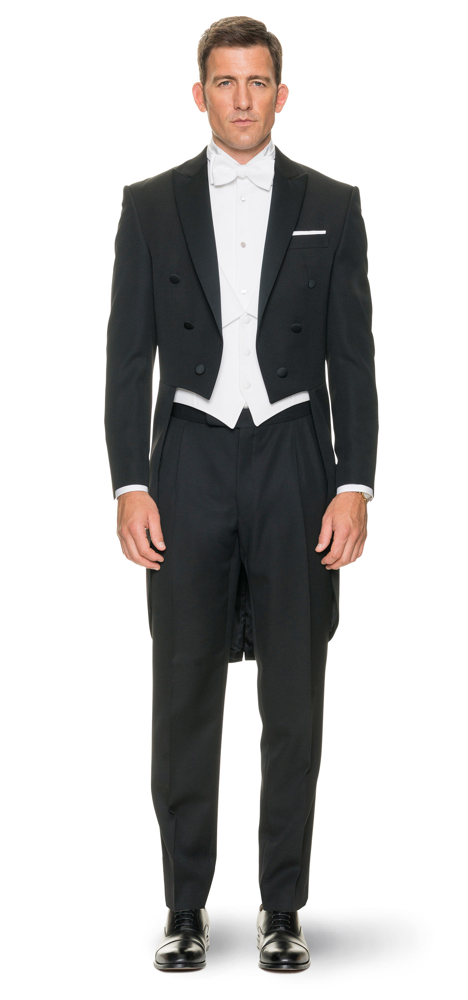

DRESS CODE
DAME:
- ▣ Nošenje mini suknji nije poželjno na Bečkom balu. Haljine i suknje bi trebale da pokrivaju kolena
- ▣ Haljine smeju biti bez ramena, takođe i otkrivati leđa, ali delovi donjeg veša ne bi trebalo da se vide
- ▣ Haljine treba da stoje dobro. Kada je reč o izboru cipela, one u prvom redu treba da budu udobne, da ne žuljaju, a visina njihovih peta tolika da omogućava plesanje
- ▣ Ženske čarape su standard na Bečkom balu, gole noge nisu rado viđene
- ▣ Nakit i galanterija treba da budu usklađeni sa odećom. Principijelno, boje treba da budu usklađene; takođe, po pravilu je raskošnija garderoba, to manje upadljivi nakit i modni dodaci
- ▣ Frizura treba da stoji, perfektno i znatno da se razlikuje od svakodnevne. Očekuju se zaista večernje frizure,na primer sa visoko podignutom kosom. Šminka treba biti decentna, prilagođena licu
GOSPODA:
- ▣ Frak, Smoking, Gala uniforma ili crno odelo sa crnom kravatom, u prsnom džepu maramica treba da bude boje kao i košulja; nebitno je kako je maramica savijena i od kakvog je materijala
- ▣ Čarape su crne boje, do kolena; ko nosi kratke čarape naći će se možda u situaciji da bespotrebno pokazuje gole noge
- ▣ Ručni satovi se ne nose; suprutno tome, dobrodošli su džepni satovi
- ▣ Na Bečkom balu u Beogradu je dozvoljeno skinuti sako tek posle završetka zvaničnog programa, ako to učini domaćin ili nakon što domaćin kaže da je to dopušteno
- ▣ Sako je otkopčan tokom sedenja, inače je zakopčan
- ▣ Za muškarce takođe važi da nakit i drugi dodaci (prstenje, narukvice, ogrlice i dr.) ne bi trebalo da budu previše upadljivi
- ▣ Razmetljiv nakit nije poželjan, niti previše nakita